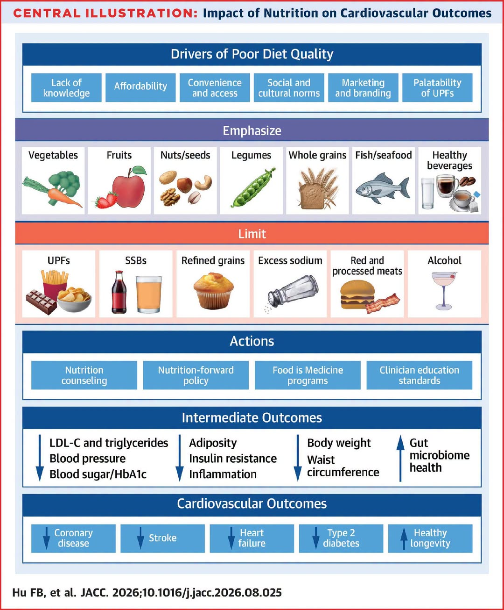

Surprise… surprise…

The Canadian food guide shared as an example of dietary guidelines
Louis shares an image of the Canadian dietary guidelines with a link to the full food guide. No commentary is given.
Surprise… surprise…
Louis shares an image of the Canadian dietary guidelines with a link to the full food guide. No commentary is given.
Louis shares a Jessica Knurick video sponsored by CSPI. The accompanying note says most researchers who wrote the scientific justification report have conflicts of interest with meat, dairy or supplement companies.

Louis criticizes the new US guidelines for saying only 'limit alcoholic beverages' instead of the previous 1 drink/day for women and 2 for men. He explains the old limits were set where non-cardiovascular risks, especially cancer, begin to rise significantly.
Louis says the diet the AHA now recommends is essentially a traditional Mediterranean/DASH diet, essentially the same as the group's recommendation. The linked posts are unavailable, so there is no detail.

A new American College of Cardiology scientific statement reviews nutrition for preventing and managing cardiovascular disease and stresses overall diet quality over single nutrients. It supports replacing saturated fat with unsaturated fat, more fiber and whole grains, and less sodium, ultra-processed food and sugary drinks. The poster notes it closely matches the group's recommended diet.
Louis clarifies the new AHA scientific statement shifts from red and processed meat toward plant proteins, essentially a Mediterranean/DASH pattern.